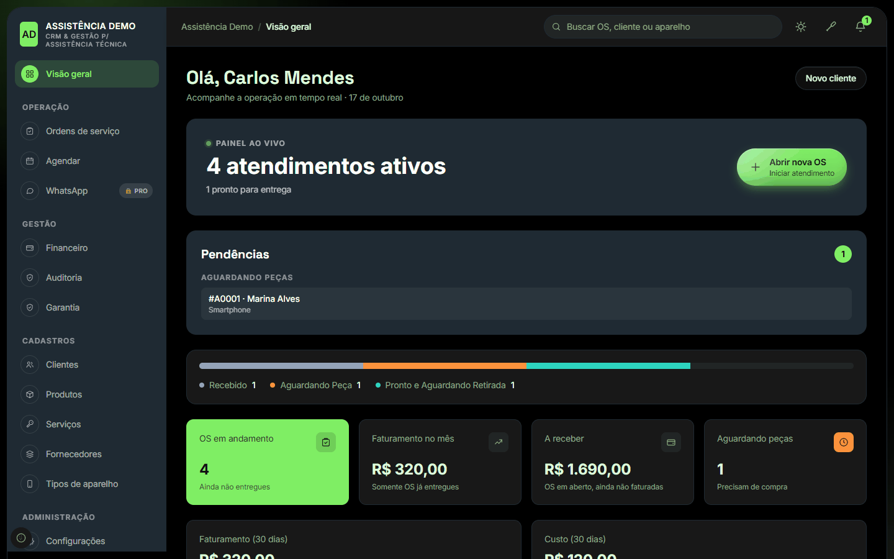

Do check-in ao
reparo entregue.
Ordens de serviço, clientes, financeiro e garantia em um só lugar. O sistema roda no seu computador: sem mensalidade e sem depender de internet para trabalhar.
Windows 10 ou 11 · instala sem senha de administrador · leva poucos minutos

O fim do caderno, da planilha e do "cadê aquele aparelho?"
Cada dor do balcão tem uma resposta dentro do sistema.
Check-in sem esquecer nada
Cliente, aparelho, número de série, acessórios e defeito informado ficam registrados na ordem de serviço, já no balcão.
Status de cada OS
Orçamento, aprovado, recebido, em análise, aguardando peça, pronto e entregue: tudo visível na lista e no painel.
Painel ao vivo e pendências
Veja os atendimentos ativos, o que aguarda peças e o que já está pronto para retirada.
OS impressa profissional
Nota de serviço com dados da loja, itens, total, prazos, garantia e campo de assinatura do cliente.
Garantia por escrito
Termos de garantia por tipo de serviço, impressos junto com a OS.
Financeiro de verdade
OS entregue vira entrada sozinha. Saídas, despesas fixas, balanço do mês e exportação em PDF.
Comissão por técnico
Calculada sobre os reparos entregues, sem conta de cabeça no fim do mês.
Equipe com controle
Permissões por função (dono, administrador, atendente, técnico, coleta) e auditoria do que foi feito.
Dados no seu computador
Seus dados ficam com você, em um banco local. Trabalhe normalmente, sem mensalidade.
Veja como é no dia a dia
Clique em qualquer imagem para ampliar. Os prints usam dados fictícios.
Comece de graça. Cresça quando precisar.
A versão grátis já resolve o básico de uma assistência. O Pro libera integrações e acesso de qualquer lugar.
| Recurso | Grátis | Pro |
|---|---|---|
| Ordens de serviço, impressão e garantia | ✓ | ✓ |
| Clientes, equipamentos, produtos, serviços e fornecedores | ✓ | ✓ |
| Financeiro e comissões | ✓ | ✓ |
| Auditoria e permissões por função | ✓ | ✓ |
| Usuários | até 3 | ilimitados |
| Link de acompanhamento para o cliente | 🔒 | ✓ |
| WhatsApp integrado e modelos de mensagem | 🔒 | ✓ |
| Integração por API / N8N | 🔒 | ✓ |
| Acesso no desktop, tablet e celular | 🔒 | ✓ |
| Acompanhar a distância, em tempo real, quando a loja está faturando | 🔒 | ✓ |
Pronto para usar em poucos minutos
Baixe o instalador
Clique em "Baixar grátis" e salve o BancadaSync-Setup.exe.
Instale
Dê dois cliques e siga o assistente. Se o Windows avisar, clique em Mais informações e depois em Executar assim mesmo. Não precisa de senha de administrador.
Crie a sua loja
Abra o BancadaSync. Na primeira tela, informe os dados da assistência e crie seu usuário e senha. Pronto.
Perguntas frequentes
Por que o Windows mostra um aviso ao instalar?
O instalador ainda não tem assinatura digital paga (o certificado de "editor verificado"), então o SmartScreen mostra "editor desconhecido". O arquivo é o mesmo publicado aqui; confira a integridade pelo hash abaixo.
Onde ficam os meus dados?
No seu computador, em %APPDATA%\CRM Assistencia. Ao desinstalar, o programa pergunta se você quer apagar os dados; o padrão é manter.
Preciso de internet?
Para o dia a dia, não. Só para recursos que dependem dela, como o WhatsApp da versão Pro.
E se o computador desligar?
Ao ligar de novo, abra o atalho do BancadaSync: seus dados e acessos voltam como estavam.
Como atualizo para uma versão nova?
Rode o instalador novo por cima. Ele desliga o sistema, troca os arquivos e mantém os seus dados.
Como confiro se o arquivo é o original? (SHA-256 da versão 1.0.0)
1d10463c9d5ac24ce16623b04e5573c4cbf718de99053cb7d86f108681689fa7
No PowerShell: Get-FileHash .\BancadaSync-Setup.exe -Algorithm SHA256
Dúvidas, sugestões ou quer o Pro?
Desenvolvido por Jefferson Honorio (MeoWDev MOD).